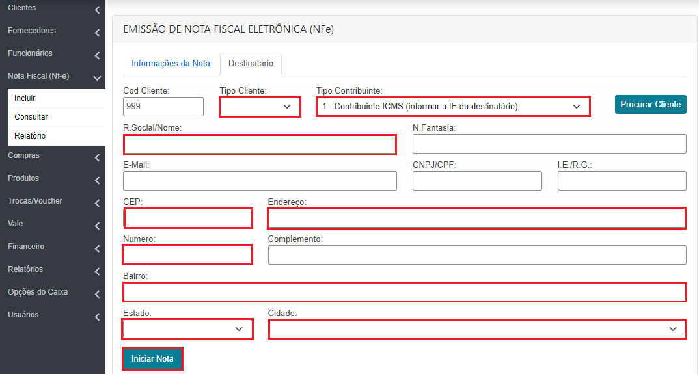
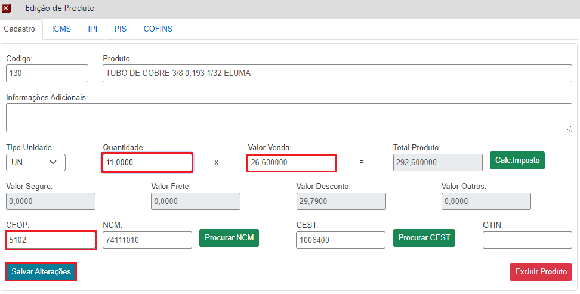

Informações da Nota
Na parte lateral esquerda vai clicar no botão “Nota Fiscal (NFe) > Incluir ”, em seguida vai inserir as seguintes informações:
Tipo Nota: Nessa situação de substituição iremos utilizar o tipo SAÍDA já que temos uma venda realizado anteriormente no caixa.
Forma de Pagamento: Utilizaremos Pagamento a vista sinalizando que houve pagamento no ato da venda.
Consumidor Final: Sim para pessoas física (CPF), não para pessoa jurídica (CNPJ).
Destino nota: Operação Interna para cliente dentro do estado, Operação Interestadual para cliente fora do estado.
Finalidade: Sera utilizada “NFe normal", pois se trata de uma venda
Substituição Cupom:Sim, quando aopção for selecionada como "SIM", vai ser exibido uma nova caixa para ser informado a chave de acesso do cupom, caso não tenha o cupom em mãos você pode clicar no botão "Procurar Venda (NFCe)".
Natureza: Especificar a opreação da nota, informando se ela é "Venda", "Devolução de compra", "Devolução de venda".

Destinatário
Campos obrigatório para preenchimento no formulário de cadastro para a emissão de nota será:
Tipo de Cliente: (Pessoa Física ou Pessoa Jurídica),
Tipo de contribuinte: “Contribuinte ICMS, pessoa Jurídica (Informar Inscrição Estadual no campo ao lado do CNPJ), "Não contribuinte" pessoa física(Não preencher o campo de Inscrição Estadual).
Razão Social:Nome da empressa ou pessoa.
CNPJ/CPF Informar o CNPJ ou CPF
Endereço Informar CEP, Endereço, Numero, Bairro, Bairro, Estado e Cidade.
Em seguida clicar no botão de “Iniciar Nota”.
 Produtos
Para inserção dos produtos, basta pesquisar o produto desejado utilizando o campo "Produto", onde a pesquisa pode ser feita utilizandoa descrição ou parte da descrição. E o campo "Código”, vai realizar a pesquisa a partir do código do produto, definido na hora do cadastro.

Inclusão de Produtos
Após selecionar o produto será exibida essa janela para ser inserida a “quantidade, Valor de venda, CFOP” após ter essas informações clicar em incluir. Será feito esse procedimento para os demais produtos, caso a nota seja composta por mais de um.
 Inclusão de Produtos importação
Também teremos a opção de “Importar Venda”, nela você pode realizar a importação de produtos de vendas que já foram realizadas através do caixa, quando clixa no botão de "Importar Venda" vai ser aberto uma nova janela para selecionar a venda a qual vai importar os produtos.

Preencha os campos de filtro caso queira uma pesquisa mais aprimorada, informando o "N° Venda, Mesa/Comanda, Data Inicio, Data Final, Operador, Cliente" e em seguida clica no botão "Buscar". Após localizar a venda desejada clique sobre ela. Assim que a venda for selecionada sera aberta uma nova janela contendo os produtos, você pode seleionar um produto, mais de um produto ou todos o produtos. Caso seja todos os produtos clicar no botão "Importar Todos", ou pode selecionar os produtos que deseja incluir na nota clicando no checkbox que fica a direita, depois de selecionar os produtos desejado, clicar no botão "Importar selecionados"
Se for feito esse procedimento, só se faz necessário clicar no botão "Salvar" e em seguida no "Emitir Nota".
Emissão de Nota
Depois de todos os produtos inseridos só será necessário clicar no botão SALVAR, para que as informações sejam salvas, em seguida no botão EMITIR NOTA. Na imagem abaixo eu deixei em destaque mais dois botões que o botão CANCELAR NOTA e INUILIZAR NOTA. O botão de cancelar nota, como a descrição já diz vai ser utilizado quando necessário cancelar a nota, esse cancelamento só é permitido se realizado em até 24 horas. Após esse período será necessário realizar uma Nota de Devolução. Já o botão inutilizar é utilizado quando a nota é gerada e precisa ser cancelada antes mesmo da emissão.